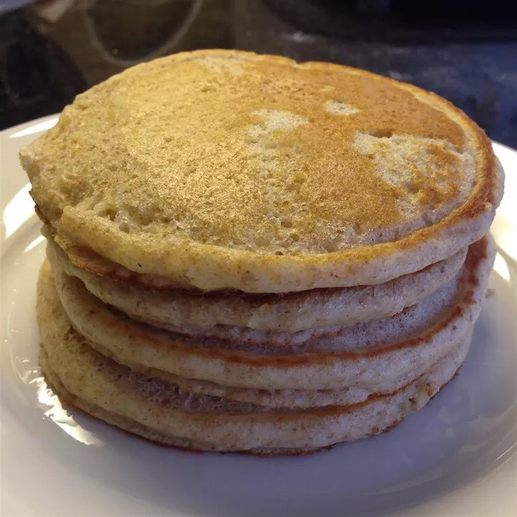

100% Whole Wheat Pancakes

These whole wheat pancakes come out very light and fluffy. My kids love
them! If you like blueberries, throw a few on top before cooking the
second side.
Ingredients
- 2 cups whole wheat flour
- 2 tablespoons white sugar
- 2 teaspoons baking powder
- ½ teaspoon baking soda
- ½ teaspoon salt
- 2 ¼ cups buttermilk
- 2 large eggs
- 4 tablespoons vegetable oil, divided
Steps
-
Whisk flour, sugar, baking powder, baking soda, and salt together in a
bowl.
-
Whisk buttermilk, eggs, and 3 tablespoons oil together in a separate
bowl until well combined. Pour wet ingredients into dry ingredients and
stir until just combined; batter may seem a bit thick.
-
Heat remaining 1 tablespoon oil in a cast iron skillet over medium-low
heat for 5 minutes. Working in batches, pour 1/3 cup of batter for each
pancake into the hot skillet. Spread batter into circles with a spoon;
cook until browned on the bottom and bubbles appear on top, 1 1/2 to 2
minutes. Flip and cook until set in the middle and browned on the other
side, about 2 more minutes.